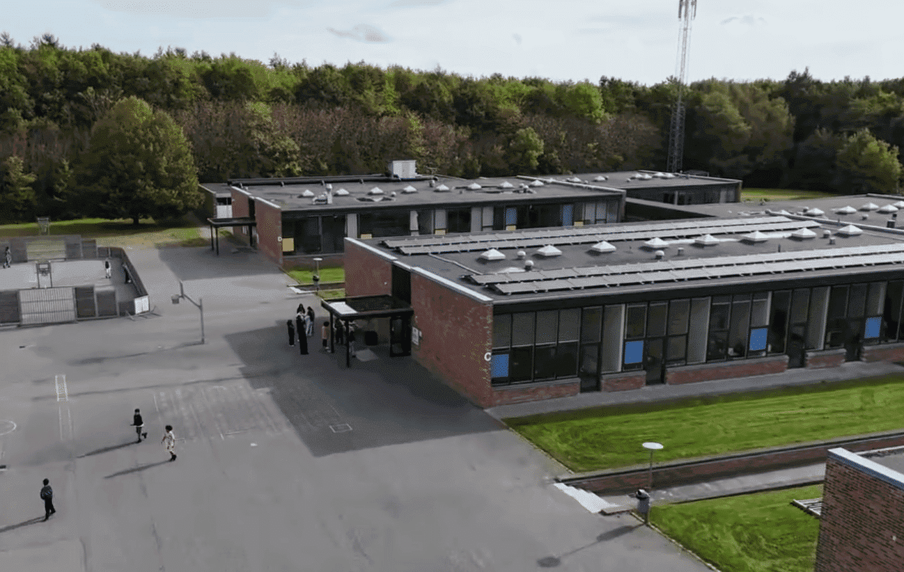

<!DOCTYPE html>
<html lang="en">
<head>
    <meta charset="UTF-8">
    <meta name="viewport" content="width=device-width, initial-scale=1.0">
    <title>Brabrand</title>
    <link rel="stylesheet" href="https://unpkg.com/leaflet/dist/leaflet.css"/>
    <link rel="stylesheet" href="https://unpkg.com/leaflet-control-geocoder/dist/Control.Geocoder.css"/>
    <script src="https://unpkg.com/leaflet/dist/leaflet.js"></script>
    <script src="https://unpkg.com/leaflet-control-geocoder/dist/Control.Geocoder.js"></script>
    <script src="https://cdn.jsdelivr.net/npm/leaflet-mouse-position@1.2.0/src/L.Control.MousePosition.min.js"></script>
    <link rel="stylesheet" href="https://cdn.jsdelivr.net/npm/leaflet-mouse-position@1.2.0/src/L.Control.MousePosition.css"/>
    <script src="https://cdn.sheetjs.com/xlsx-latest/package/dist/xlsx.full.min.js"></script>
    <style>
        #map { height: 100vh; width: 100vw; }
        .leaflet-control-geocoder {
            background: white;
            border-radius: 4px;
            box-shadow: 0 1px 5px rgba(0,0,0,0.65);
        }
    </style>
</head>
<body>
    <div id="map"></div>
    <script>
        var map = L.map('map', {
            center: [56.158, 10.139],
            zoom: 15,
            maxBounds: [[55.9, 9.9], [56.4, 10.4]], // Meget løsere bounds
            maxBoundsViscosity: 0.3 // Blødere grænser
        });

        // Base maps
        // OpenStreetMap Standard
        var osm = L.tileLayer('https://{s}.tile.openstreetmap.org/{z}/{x}/{y}.png', {
            attribution: '© OpenStreetMap contributors',
            maxZoom: 19
        });

        // ESRI Satellit kort
        var satellite = L.tileLayer('https://server.arcgisonline.com/ArcGIS/rest/services/World_Imagery/MapServer/tile/{z}/{y}/{x}', {
            attribution: '© ESRI',
            maxZoom: 19
        });

        // OpenTopoMap (topografisk kort)
        var topo = L.tileLayer('https://{s}.tile.opentopomap.org/{z}/{x}/{y}.png', {
            attribution: '© OpenTopoMap',
            maxZoom: 17
        });

        // ESRI World Street Map
        var streets = L.tileLayer('https://server.arcgisonline.com/ArcGIS/rest/services/World_Street_Map/MapServer/tile/{z}/{y}/{x}', {
            attribution: '© ESRI',
            maxZoom: 19
        });

        // OpenStreetMap Humanitarian
        var humanitarian = L.tileLayer('https://{s}.tile.openstreetmap.fr/hot/{z}/{x}/{y}.png', {
            attribution: '© OpenStreetMap contributors, Humanitarian OpenStreetMap Team',
            maxZoom: 19
        });

        // CartoDB Dark Matter (mørkt tema)
        var dark = L.tileLayer('https://{s}.basemaps.cartocdn.com/dark_all/{z}/{x}/{y}{r}.png', {
            attribution: '© CartoDB',
            maxZoom: 19
        });

        // Historiske kort som overlay (nu i mappen 1980)
        var historiskKort = L.tileLayer('./1980/{z}/{x}/{y}.png', {
            attribution: '© Erik Oehlerich',
            minZoom: 11,
            maxZoom: 17,
            tileSize: 256,
            opacity: 1.0,  // Fuld synlighed
            bounds: [[55.9, 9.9], [56.4, 10.4]], // Meget større område omkring Brabrand
            noWrap: true,
            errorTileUrl: '', // Skjul fejl-tiles
            updateWhenIdle: true
        });

        // Nyt historisk lag fra mappen 1953-1976
        var historiskKort1953 = L.tileLayer('./1953-1976/{z}/{x}/{y}.png', {
            attribution: '© Erik Oehlerich',
            minZoom: 11,
            maxZoom: 17,
            tileSize: 256,
            opacity: 1.0,
            bounds: [[55.9, 9.9], [56.4, 10.4]],
            noWrap: true,
            errorTileUrl: '',
            updateWhenIdle: true
        });

        // Definér base og overlay maps
        var baseMaps = {
            "OpenStreetMap": osm,
            "Satellit": satellite,
            "Topografisk": topo,
            "Vejkort": streets,
            "Humanitarian": humanitarian,
            "Mørkt tema": dark
        };

        // Opret koordinat-vælger gruppe
        var koordinatGruppe = L.layerGroup();
        
        // Marker og kontrol (ikke tilføjet til map før laget aktiveres)
        var marker = null;
        var koordinatInfo = L.control({position: 'topleft'});
        
        koordinatInfo.onAdd = function(map) {
            this._div = L.DomUtil.create('div', 'koordinat-info');
            // Minimal stil så boksen er lille og diskret
            this._div.style.background = 'rgba(255,255,255,0.95)';
            this._div.style.padding = '6px 8px';
            this._div.style.margin = '10px';
            this._div.style.border = '1px solid rgba(0,0,0,0.2)';
            this._div.style.borderRadius = '4px';
            this._div.style.fontSize = '13px';
            this._div.style.boxShadow = '0 1px 4px rgba(0,0,0,0.2)';
            this._div.innerHTML = '<strong>Valgte koordinater</strong><br><span style="font-size:12px;color:#333">Klik på kortet for at vælge</span>';
            return this._div;
        };

        // Klik-handler: sæt markør, vis koordinater og kopier automatisk
        var clickHandler = function(e) {
            if (marker) {
                koordinatGruppe.removeLayer(marker);
            }
            marker = L.circleMarker(e.latlng, {
                radius: 6,
                color: '#d9534f',
                weight: 1,
                fillColor: '#d9534f',
                fillOpacity: 0.9
            });
            koordinatGruppe.addLayer(marker);

            var lat = e.latlng.lat.toFixed(6);
            var lng = e.latlng.lng.toFixed(6);
            var coords = lat + ', ' + lng;

            // Opdater kontrolboksen
            koordinatInfo._div.innerHTML = '<strong>Valgte koordinater</strong><br>' +
                                           '<div style="margin-top:4px;">Lat: ' + lat + '<br>Lng: ' + lng + '</div>' +
                                           '<div style="margin-top:6px;color:#2e7d32;font-weight:600;">Kopieret til udklipsholder</div>';

            // Kopier til udklipsholder (kræver HTTPS eller localhost)
            navigator.clipboard.writeText(coords).then(function() {
                // Vis kort bekræftelse i konsol (valgfrit)
                console.log('Koordinater kopieret: ' + coords);
            }).catch(function(err){
                console.warn('Kunne ikke kopiere koordinater:', err);
            });

            // Gør beskeden midlertidig (tilbage til instruks efter 2s)
            setTimeout(function() {
                if (koordinatInfo._div) {
                    koordinatInfo._div.innerHTML = '<strong>Valgte koordinater</strong><br><span style="font-size:12px;color:#333">Klik på kortet for at vælge</span>';
                }
            }, 2000);
        };

        // Håndter aktivering/deaktivering via layer-control
        map.on('overlayadd', function(e) {
            if (e.layer === koordinatGruppe) {
                // Vis kontrol og begynd lytte efter klik
                koordinatInfo.addTo(map);
                map.on('click', clickHandler);
            }
        });
        map.on('overlayremove', function(e) {
            if (e.layer === koordinatGruppe) {
                // Fjern kontrol og stop lytning; ryd markør
                koordinatInfo.remove();
                map.off('click', clickHandler);
                if (marker) {
                    koordinatGruppe.removeLayer(marker);
                    marker = null;
                }
            }
        });
        
        // Hvis brugeren vil have koordinatværktøjet aktivt ved load, kan man tilføje:
        // koordinatGruppe.addTo(map);
        // koordinatInfo.addTo(map);
        // map.on('click', clickHandler);

        // Opdateret overlay maps — begge historiske lag og koordinat-vælger
        var overlayMaps = {
            "Brabrand 1980-2001": historiskKort,
            "Brabrand 1953-1976": historiskKort1953,
            "Koordinat vælger": koordinatGruppe
        };

        // Opret lag til lokaliteter (så det kan toggles)
        var lokaliteterLayer = L.layerGroup();

        // Erstat tidligere én-liners control med en variabel, så vi kan tilføje overlays senere
        var layerControl = L.control.layers(baseMaps, overlayMaps).addTo(map);

        // Funktion: indlæs Excel (xlsx) fra en sti og tilføj punkter til lokaliteterLayer
        function loadExcelToMap(path) {
            fetch(encodeURI(path)).then(function(resp) {
                return resp.arrayBuffer();
            }).then(function(ab) {
                var workbook = XLSX.read(ab, {type: 'array'});
                var firstSheetName = workbook.SheetNames[0];
                var worksheet = workbook.Sheets[firstSheetName];
                var rows = XLSX.utils.sheet_to_json(worksheet, {defval: ''});

                console.log('Excel rækker:', rows.length);
                var added = 0;

                rows.forEach(function(row) {
                    var projekt = row['Projekt'] || row['Project'] || row['projekt'] || '';
                    var adresse = row['Adresse'] || row['Address'] || row['adresse'] || '';
                    var årstal = row['Årstal'] || row['Aarstal'] || row['År'] || row['Year'] || '';
                    var typeByg = row['Type af byggeri'] || row['Type'] || row['type'] || '';
                    var note = row['Note'] || row['Bemærkning'] || row['Note/Comment'] || '';

                    var lat = null, lng = null;
                    if (row['Lat'] !== undefined && row['Lng'] !== undefined) {
                        lat = parseFloat(row['Lat']);
                        lng = parseFloat(row['Lng']);
                    } else if (row['Latitude'] !== undefined && row['Longitude'] !== undefined) {
                        lat = parseFloat(row['Latitude']);
                        lng = parseFloat(row['Longitude']);
                    } else if (row['Koordinater'] || row['Koordinat'] || row['Coordinates']) {
                        var coordStr = (row['Koordinater'] || row['Koordinat'] || row['Coordinates']).toString();
                        var m = coordStr.match(/[-+]?\d*\.?\d+/g);
                        if (m && m.length >= 2) {
                            lat = parseFloat(m[0]);
                            lng = parseFloat(m[1]);
                        }
                    }

                    if (!isFinite(lat) || !isFinite(lng)) {
                        console.warn('Ugyldige koordinater for række:', row);
                        return;
                    }

                    var marker = L.circleMarker([lat, lng], {
                        radius: 6,
                        color: '#B22222',
                        weight: 1,
                        fillColor: '#B22222',
                        fillOpacity: 0.9
                    });

                    var popup = '<div style="max-width:260px;font-size:14px;">' +
                                (projekt ? '<strong>' + projekt + '</strong><br>' : '') +
                                (adresse ? adresse + '<br>' : '') +
                                (årstal ? 'Årstal: ' + årstal + '<br>' : '') +
                                (typeByg ? 'Type: ' + typeByg + '<br>' : '') +
                                (note ? '<em>' + note + '</em><br>' : '') +
                                '<small style="color:#666;">' + lat.toFixed(6) + ', ' + lng.toFixed(6) + '</small>' +
                                '</div>';

                    marker.bindPopup(popup);
                    lokaliteterLayer.addLayer(marker);
                    added++;
                });

                layerControl.addOverlay(lokaliteterLayer, 'Lokaliteter (Excel)');

                console.log('Markers tilføjet fra Excel:', added);

                // Hvis du vil se dem med det samme, aktiver laget:
                if (added > 0) {
                    lokaliteterLayer.addTo(map);
                } else {
                    console.warn('Ingen gyldige punkter fundet i Excel-filen.');
                }
            }).catch(function(err){
                console.error('Kunne ikke indlæse Excel:', err);
            });
        }

        // Indlæs din fil (opdateret navn)
        loadExcelToMap('./data/FM.xlsx');

        // Start med OSM som baggrund og historisk kort som overlay
        osm.addTo(map);
        historiskKort.addTo(map);

        // Tilføj punkt for Gjellerupskolen/Sødalskolen
        var skoleMarker = L.circleMarker([56.149854, 10.137970], {
            radius: 8,
            color: '#B22222',
            weight: 1,
            fillColor: '#B22222',
            fillOpacity: 0.9
        }).addTo(map);
        
        // Opret popup indhold med billede og information
        var popupContent = `
            <div style="max-width: 300px;">
                <h3 style="margin: 0 0 10px 0;">Gjellerupskolen/Sødalskolen</h3>
                
                <table style="width: 100%; border-collapse: collapse;">
                    <tr>
                        <td style="padding: 4px 0; font-weight: bold;">Arkitekt:</td>
                        <td style="padding: 4px 0;">Jens Hedegaard</td>
                    </tr>
                    <tr>
                        <td style="padding: 4px 0; font-weight: bold;">Årstal:</td>
                        <td style="padding: 4px 0;">1960</td>
                    </tr>
                    <tr>
                        <td style="padding: 4px 0; font-weight: bold;">Type byggeri:</td>
                        <td style="padding: 4px 0;">Skole</td>
                    </tr>
                    <tr>
                        <td style="padding: 4px 0; font-weight: bold;">Adresse:</td>
                        <td style="padding: 4px 0;">Louisevej 29, 8220 Brabrand</td>
                    </tr>
                    <tr>
                        <td style="padding: 4px 0; font-weight: bold;">Koordinater:</td>
                        <td style="padding: 4px 0;">56.151622, 10.118666</td>
                    </tr>
                </table>
            </div>

            
        `;

        // Tilføj popup til markøren
        skoleMarker.bindPopup(popupContent);

        // Tilføj søgefunktion
        var geocoder = L.Control.geocoder({
            defaultMarkGeocode: false,
            position: 'topleft',
            placeholder: 'Søg efter adresse...',
            geocoder: new L.Control.Geocoder.Nominatim({
                language: 'da' // Dansk sprog
            })
        }).addTo(map);

        // Håndter søgeresultater
        geocoder.on('markgeocode', function(e) {
            var bbox = e.geocode.bbox;
            var poly = L.polygon([
                bbox.getSouthEast(),
                bbox.getNorthEast(),
                bbox.getNorthWest(),
                bbox.getSouthWest()
            ]);
            map.fitBounds(poly.getBounds());
        });
    </script>
</body>
</html>